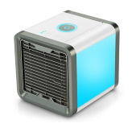

Arctic Air is a tabletop personal air cooler that uses evaporative technology. Once turned on, it can helps cool your personal space for up to eight hours. 
Operation
The operation of the unit is fairly straightforward. Once plugged in, you will need to fill up the water tank and let it sit for around 5 minutes. Afterward, you can turn it on and orient the air flow to your liking.
There is also the possibility of controlling the strengh of the air flow (low, medium and high). Each are self explanatory but remember that the higher the setting the sooner you will need to fill up the water.
Apart for aestic, the light will turn amber when it detects that the filter needs to be changed. Simply hold the light button to reset the timer.
Good
- Straightforward operation.
- It does blow cool air.
- Around 30$ USD
Bad
- Fairly noisy when the fan is running at highest setting.
- Filter replacement at around 10$ USD
Verdict
In essence, Arctic Air behaves much like a tabletop fan. However, instead of blowing ambient temperature air, it blows air that have been cool down by a few degree. It does give the user a distinct impression of a cool breeze. If you are considering a fan to cool yourself at your desk then Artic Air can be an alternative. However, if you are looking for more, this is not for you.